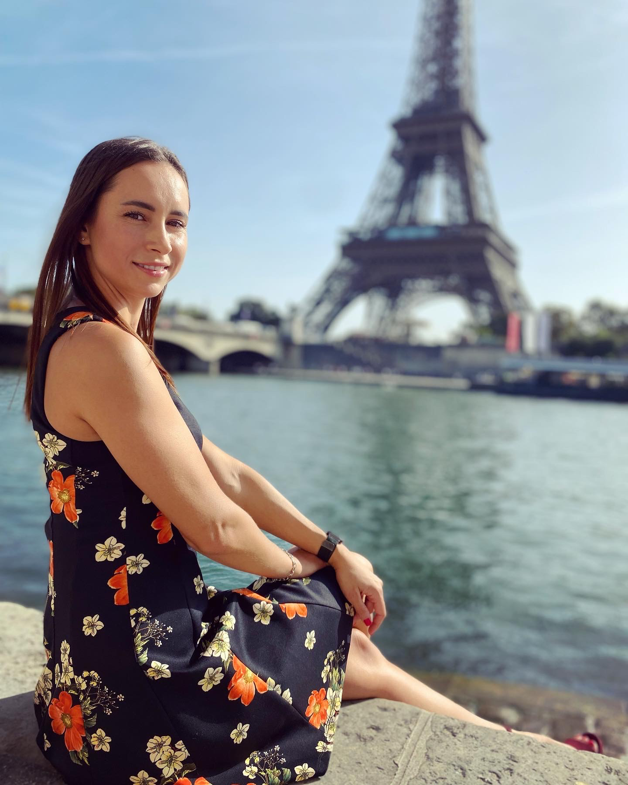

About Me

10 facts about me:
- I am married and have two children.
- I had been studying English for about 8 years but then didn't practice. (So, if there are any mistakes, I'm sorry).
- I really love to study and do it almost all my life.
- I hated programming lessons at school. They were very boring and incomprehensible.
- I may speak 4 languages.
- I love reading books about adult and child psyhology, motivated stories etc. One of my favourite books is "Mind Power" by John Kehoe.
- The best way to spend free time for me is travelling.
- Three words that describe me: strength, liberty, self-confidence.
- What I value most in life: my time.
- I dream of becoming an excellent specialist en IT and being useful of my work.